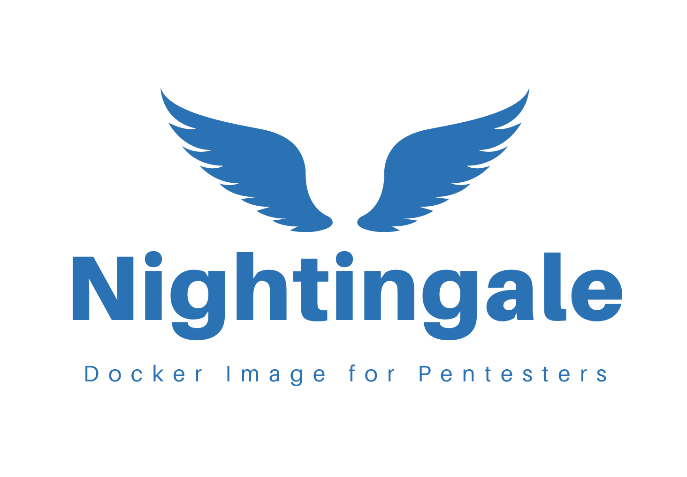
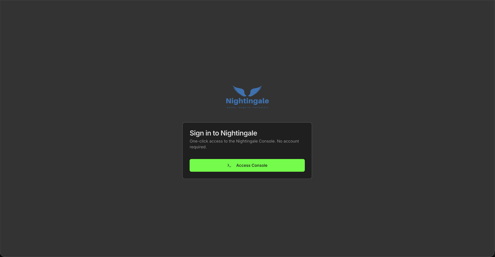
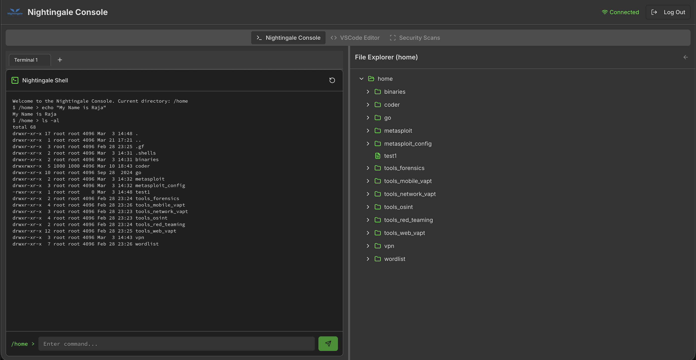
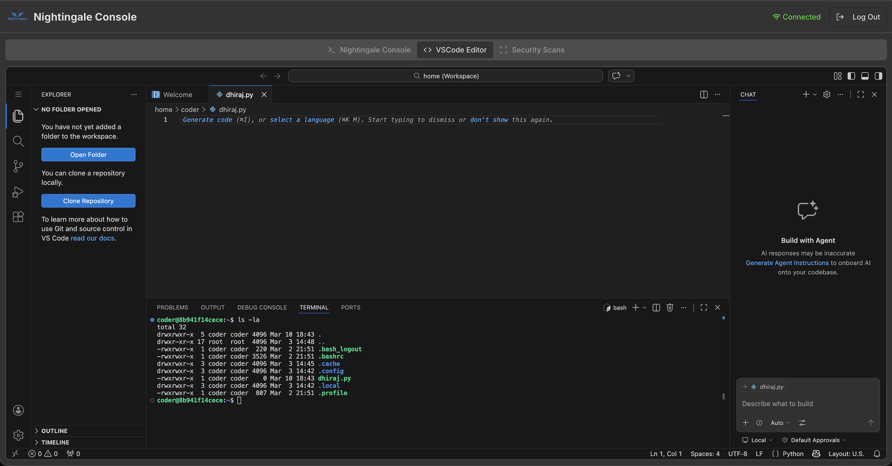

One environment
200+ tools across 6 categories with no local dependency hell—pull, run, and test.
Nightingale is a Docker-based penetration testing framework with a modern web GUI, multi-terminal support, and 200+ pre-installed tools—covering web, network, mobile, OSINT, and forensics in one consistent environment.

Trusted in the community
Toolchains sprawl across hosts, environments drift, and onboarding new testers takes days. Nightingale keeps your workflow in one container and one browser session.
200+ tools across 6 categories with no local dependency hell—pull, run, and test.
Web GUI, multi-terminal sync, and AI-assisted commands reduce friction in the critical path.
Docker isolation means Windows, macOS, Linux, or cloud—same stack, reproducible outcomes.
Nightingale v2.0 delivers a cutting-edge penetration testing framework with an intuitive web-based GUI, from parallel terminals to scan orchestration.
Manage multiple terminal sessions simultaneously with real-time synchronization.
Outcome: Parallel workflows without juggling brittle SSH multiplexing.
Access your entire penetration testing environment through a modern, intuitive web interface.
Outcome: Onboard testers in minutes, not days.
Get intelligent command recommendations based on your current context and output.
Outcome: Faster iteration on hypotheses during active testing.
Navigate your file system with an interactive, expandable directory tree.
Outcome: Clearer situational awareness during investigations.
Built-in VPN support for connecting to testing networks.
Outcome: Safer, repeatable access to segmented environments.
Organize and manage vulnerability scans with a comprehensive dashboard.
Outcome: Reporting-ready traceability without spreadsheet chaos.
Nightingale is built for real engagements: isolation, speed, and a UI that stays out of your way.
Runs in Docker with a clear boundary from the host—consistent tooling without polluting workstations.
Terminal, explorer, and scan views in one place so teams can collaborate without screen-sharing friction.
Multi-terminal sync and file explorer keep state aligned so you spend less time re-establishing context.
Curated categories across web, network, mobile, OSINT, forensics, and wordlists—ready for professional use.
Nightingale keeps testing work inside the container: fewer host-side changes, clearer boundaries for shared machines, and an OWASP-aligned open model you can inspect on GitHub.
Use dedicated credentials and networks for engagements. Nightingale helps you keep work scoped, reproducible, and reviewable.
Free to use, fork, and improve—backed by the OWASP community and GitHub workflows.
View on GitHubRun wherever Docker runs—local, CI, or cloud. Pull from GitHub Container Registry and wire into your existing workflows.
One browser session: shell and file tree, an embedded VS Code workspace, guided security scans, and a frictionless path into the console.



Nightingale includes specialized tools for every aspect of penetration testing, organized into focused categories for maximum efficiency.
Comprehensive web application security testing tools including XSS scanners, SQL injection tools, and API testing frameworks.
Network reconnaissance and exploitation tools for identifying vulnerabilities and testing network security.
Mobile application security testing tools for Android and iOS, including reverse engineering and dynamic analysis frameworks.
Open-source intelligence gathering tools for reconnaissance and information collection from public sources.
Digital forensics and red team tools for evidence analysis, steganography, and advanced exploitation techniques.
Comprehensive wordlist collections and fuzzing tools for password attacks, directory brute-forcing, and content discovery.
Nightingale leverages Docker's modular architecture to provide a flexible, scalable penetration testing environment.
Build custom Docker images by combining specialized tool categories with a common programming language base.
WebSocket-based communication ensures instant updates between terminal sessions and the file explorer.
Deploy on Kubernetes with Helm charts, or run locally with Docker Compose. Works everywhere Docker runs.
Each container runs in complete isolation, ensuring security and preventing conflicts with host systems.
Launch Nightingale and begin your penetration testing journey with these simple steps.
Download and install Docker Desktop for your operating system (Windows, macOS, or Linux).
Open your terminal and pull the Nightingale image from GitHub Container Registry (GHCR).
docker pull ghcr.io/rajanagori/nightingale:stable
Run the container with port mapping to access the web interface on localhost.
docker run -d -p 8080:8080 --name nightingale ghcr.io/rajanagori/nightingale:stable
Open your browser and navigate to localhost:8080 to access the Nightingale interface.
Nightingale has been featured at major security conferences and recognized by the cybersecurity community.
Asia 2022, 2023, 2024
EU London 2025
MEA 2022, 2023
(Shortlisted)
EU 2022
Hands-on Event
2023
2024
Part of the Open Web Application Security Project
Get answers to common questions about Nightingale v2.0 and penetration testing with Docker.
Nightingale v2.0 is a comprehensive penetration testing framework built on Docker that provides a modern web-based GUI with multi-terminal support and 200+ pre-installed security tools. It runs entirely in containers to ensure platform independence and eliminate installation conflicts. It combines the power of specialized security tools with an intuitive interface designed specifically for modern penetration testing workflows.
Not at all! Nightingale is designed to be user-friendly and doesn't require Docker expertise. Simply pull the container, run it, and access the web interface through your browser. All Docker complexities are handled automatically, allowing security professionals to focus on their testing rather than container management.
Nightingale supports comprehensive penetration testing across multiple domains: web application vulnerability assessment (XSS, SQL injection, API testing), network penetration testing (port scanning, exploitation), mobile security testing (Android/iOS analysis), OSINT (reconnaissance and information gathering), digital forensics, and red team operations. With 200+ tools organized into 6 specialized categories, it covers the entire security testing lifecycle.
Yes, Nightingale is completely free and open source. As an OWASP Incubator Project, it follows open-source principles and is available on GitHub. The framework is built on Docker, making it easily accessible to security professionals worldwide without licensing costs or vendor lock-in.
Nightingale runs on any operating system that supports Docker, including Windows, macOS, and Linux. This platform independence means you can use the same tools and interface regardless of your host operating system, making it perfect for diverse environments and team collaboration.
Absolutely! Nightingale is used by security professionals worldwide for professional engagements. Its comprehensive toolset, organized workflows, and professional features like scan management and real-time file exploration make it suitable for enterprise-grade penetration testing. The framework has been featured at major security conferences including BlackHat Arsenal.
Nightingale requires only Docker to be installed on your system. Minimum requirements include: 4GB RAM, 10GB free disk space, and a modern web browser. The containerized approach ensures consistent performance across different hardware configurations and eliminates dependency conflicts.
Join thousands of security professionals using Nightingale for their penetration testing needs.